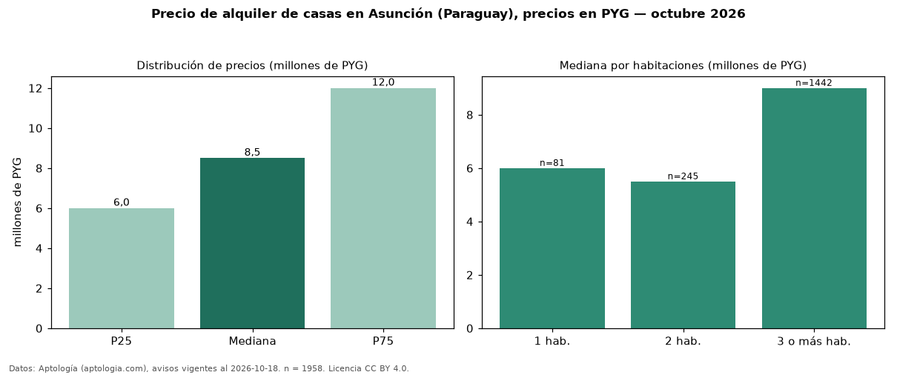

Precio de alquiler de casas en Asunción (Paraguay), precios en PYG — octubre 2026
Con 1.958 avisos vigentes, el canon mediano de casas en alquiler en Asunción (Paraguay) es PYG 8,50 millones al mes. Por metro cuadrado, la mediana es PYG 34.286/m² al mes (n = 1465 avisos con área). Por precio mediano es la ciudad 1 de 5 de Paraguay con al menos 30 avisos de casas en alquiler (PYG). Tiene 19 barrios con al menos 30 avisos de casas en alquiler; la más cara es Las Lomas (PYG 13 millones) y la más económica San Vicente (PYG 6,50 millones). La mediana de toda la vivienda en alquiler de Asunción (PYG) es PYG 5,90 millones; las casas quedan +44 %. El área mediana anunciada es 280 m². El segmento con más oferta es el de 3 o más habitaciones (1.442 avisos, mediana PYG 9,00 millones); pasar de 1 habitación a 3 o más habitaciones cambia la mediana +50 %. La mitad central de los avisos va de PYG 6,00 millones a PYG 12 millones (razón 2,0), una dispersión alta. Datos: Aptología (aptologia.com), CC BY 4.0 — https://www.aptologia.com/py/alquiler/asuncion. Archivos: PDF, CSV con las cifras y gráfica PNG.

| Avisos únicos | 1958 |
|---|---|
| Percentil 25 | COP 6.000.000 |
| Mediana | COP 8.500.000 |
| Percentil 75 | COP 12.000.000 |
| Mediana por m² | COP 34.285 |
Fuente: avisos vigentes de portales inmobiliarios recopilados por Aptología, deduplicados (mínimo 30 avisos únicos por celda). Precios pedidos, no cerrados. Fecha: 2026-10-18.